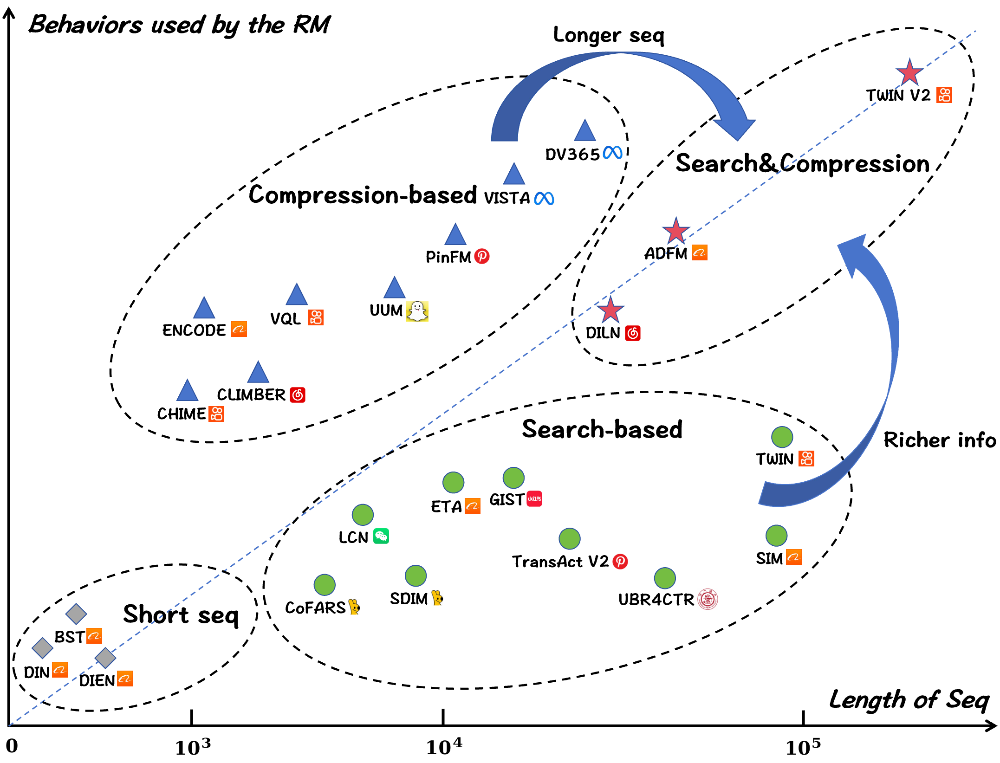
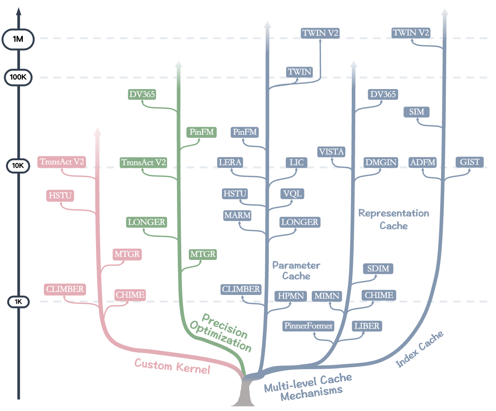

Official repository for "A Survey of User Lifelong Behavior Modeling: Perspectives on Efficiency and Effectiveness".
1. Paper
Rui Zhou, Qinglin Jia, Bo Chen, Peng Xu, Yijia Sun, Siyuan Lou, Chaoxin Fu, Mengyuan Fu, Guoming Shen, Zheli Zhou, and others. A Survey of User Lifelong Behavior Modeling: Perspectives on Efficiency and Effectiveness. Preprints, 2026.
Preprint / Project Page / Code / Citation
This survey provides an in-depth examination of existing User Lifelong Behavior Modeling (ULBM) methods from an industrial perspective, with a particular focus on their performance under the efficiency–effectiveness balance, aiming to sustain a stable return on investment (ROI) as user lifelong behavior sequences continue to grow.
We will continue to track and summarize emerging ULBM research, with particular attention to approaches that have been validated in real-world industrial settings, in order to facilitate the continued advancement of this field.
2. Highlights
- Tracks representative ULBM methods from short-sequence recommenders to ultra-long industrial models.
- Organizes methods by efficiency optimizations, effectiveness optimizations, and the efficiency-effectiveness balance.
- Provides curated dataset statistics for ultra-long behavior modeling benchmarks.
- Welcomes community contributions to keep the survey current.
3. Survey Findings
This is a survey repository rather than a single experimental code release, so its result-facing section summarizes evidence patterns and benchmark coverage instead of reporting a new leaderboard.
| Finding | Evidence in the survey |
|---|---|
| Efficiency-effectiveness balance is the central deployment constraint. | The survey frames ULBM around a stable ROI point as user histories grow longer. |
| Efficiency methods split into algorithmic and infrastructure paths. | Algorithmic methods include search-based and compression-based designs; infrastructure methods include custom kernels, precision optimization, and multi-level caching. |
| Effectiveness methods focus on representation quality. | The survey organizes them around interaction modeling, fine-grained user interest understanding, and external knowledge. |
| The repository is also a benchmark map. | The paper list and dataset section collect short-sequence, search-based, compression-based, hybrid, end-to-end, heterogeneous-behavior, user-interest, and knowledge-enhanced ULBM work. |
Conclusion: for survey-style repositories, the public-facing result section should clarify the taxonomy, evidence axes, and benchmark scope rather than inventing a conventional experiment table.
4. Citation
If you find this survey useful, please cite the following paper:
@article{zhou2026survey,
title={A Survey of User Lifelong Behavior Modeling: Perspectives on Efficiency and Effectiveness},
author={Zhou, Rui and Jia, Qinglin and Chen, Bo and Xu, Peng and Sun, Yijia and Lou, Siyuan and Fu, Chaoxin and Fu, Mengyuan and Shen, Guoming and Zhou, Zheli and others},
year={2026},
publisher={Preprints}
}Table of Contents
- Paper
- Highlights
- Survey Findings
- Citation
- Introduction
- Survey Scope
- Efficiency-Effectiveness Balance
- Papers
- Datasets
- Acknowledgement
- How to Contribute
Introduction
User Lifelong Behavior Modeling (ULBM) aims to capture users’ long-term and continuously evolving preferences by leveraging their lifelong interaction histories. Owing to its defining characteristics, including ultra-long behavior sequences and heterogeneous user actions, deploying ULBM in industrial recommender systems poses substantial challenges in balancing efficiency and effectiveness, which is critical for sustaining a stable return on investment (ROI) as user behavior sequences continue to grow.
This survey examines ULBM approaches from two complementary perspectives: efficiency-aware designs, which emphasize algorithmic and engineering optimizations to improve scalability, and effectiveness-oriented modeling strategies, which focus on enhancing representation capacity through expressive interaction modeling, fine-grained interest mining, and the incorporation of external knowledge. In addition, we summarize representative datasets for ULBM evaluation to provide practical guidance and support future research.
Through this survey, we aim to provide researchers and practitioners with a comprehensive set of insights and practical references, and to stimulate further exploration of scalable and effective ULBM solutions under real-world constraints.
The shift of the ROI equilibrium point in industrial scenarios

Survey Scope
This survey covers a wide range of topics relevant to ULBM, including:
- Ultra-long sequence modeling.
- Heterogeneous behavior modeling.
- Industrial deployment under the efficiency–effectiveness balance (EEB).
Efficiency-Effectiveness Balance
Efficiency Optimizations
Algorithmic
ULBM commonly adopts a two-stage paradigm of preprocess first, encode later to reduce the scale of user behavior sequences and achieve a balance between efficiency and effectiveness. This paradigm can be further categorized into search-based methods and compression-based methods. In this context, the General Search Unit (GSU) and the Interest Reduction Unit (IRU) serve as key components for improving efficiency.
Trend chart of existing ULBM work on algorithmic optimizations:

Infrastructure
Industrial-scale ULBM faces strict latency and throughput requirements due to ultra-long sequences, persistent user states, and frequent online inference. Infrastructure optimizations aim to increase throughput, reduce GPU memory and storage, and shorten response time. These optimizations can be categorized into three main types: custom kernels, precision optimization, and multi-level caching.
The infrastructure optimizations of ULBM can be organized along three dimensions:

Effectiveness Optimizations
Effectiveness in ULBM refers to improving the quality of user representations by addressing key limitations: summarizing long-term interactions may lose critical dependencies, overlapping behaviors introduce noise, and relying solely on observed actions limits semantic understanding.
To tackle these challenges, effectiveness optimizations focus on three main directions: advancing interaction modeling, fine-grained user interest understanding, and incorporating external knowledge.
The effectiveness optimizations of ULBM can be characterized along three dimensions:

Papers
We provide a curated collection of references related to ULBM, including: short-sequence modeling, search-based methods, compression-based methods, Hybrid methods, End-to-End methods, Methods on heterogeneous user behaviors, Methods on user interest, Methods on incorporation of external knowledge.
- Short-sequence Modeling: Early and foundational methods that provide essential modeling principles for capturing user preferences through short-term interaction dynamics.
| Method | Paper Title | Published At |
|---|---|---|
| GwEN | Deep Neural Networks for YouTube Recommendations | RecSys'16 |
| DIN | Deep Interest Network for Click-Through Rate Prediction | KDD'18 |
| DIEN | Deep Interest Evolution Network for Click-Through Rate Prediction | AAAI'19 |
| BST | Behavior Sequence Transformer for E-commerce Recommendation in Alibaba | KDD'19 |
- Search-based Methods: Methods that enhance both efficiency and modeling effectiveness by searching behavior subsets most relevant to the current context from long user interaction histories.
- Compression-based Methods: Methods that transform long behavior sequences into a limited number of compact representations to support scalable and effective user modeling.
- Hybrid Methods: Approaches that combine retrieval-based and compression-based strategies to balance efficiency and effectiveness when modeling ultra-long user behavior sequences. Here, C+S means compression first,search later and S+C means search first,compression later.
| Method | Paper Title | Published At |
|---|---|---|
| ADFMC+S | Adversarial Filtering Modeling on Long-term User Behavior Sequences for Click-Through Rate Prediction | SIGIR'22 |
| HBMC+S | Hierarchical User Long-term Behavior Modeling for Click-Through Rate Prediction | SIGIR'25 |
| TWIN V2C+S | TWIN V2: Scaling Ultra-Long User Behavior Sequence Modeling for Enhanced CTR Prediction at Kuaishou | CIKM'24 |
| DMGINC+S | DMGIN: How Multimodal LLMs Enhance Large Recommendation Models for Lifelong User Post-click Behaviors | arXiv'25 |
| DILNS+C | Interest Changes: Considering User Interest Life Cycle in Recommendation Systems | SIGIR'25 |
- End-to-End Methods: Approaches that directly model ultra-long user behavior sequences in a unified framework without explicit preprocessing, enabling holistic preference learning.
| Method | Paper Title | Published At |
|---|---|---|
| STCA | Make It Long, Keep It Fast: End-to-End 10k-Sequence Modeling at Billion Scale on Douyin | arXiv'25 |
| LONGER | LONGER: Scaling Up Long Sequence Modeling in Industrial Recommenders | RecSys'25 |
| HSTU | Actions Speak Louder than Words: Trillion-Parameter Sequential Transducers for Generative Recommendations | ICML'24 |
| MTGR | MTGR: Industrial-Scale Generative Recommendation Framework in Meituan | CIKM'25 |
| GenRank | Towards Large-scale Generative Ranking | arXiv'25 |
| Fuxi-α | FuXi-α: Scaling Recommendation Model with Feature Interaction Enhanced Transformer | WWW'25 |
- Methods on heterogeneous user behaviors: Approaches that explicitly model multiple types of user actions to capture diverse preference signals and their interactions within user behavior sequences.
| Method | Paper Title | Published At |
|---|---|---|
| GNMR | Multi-Behavior Enhanced Recommendation with Cross-Interaction Collaborative Relation Modeling | ICDE'21 |
| MB-CGCN | Multi-Behavior Recommendation with Cascading Graph Convolution Networks | WWW'23 |
| MB-GMN | Graph Meta Network for Multi-Behavior Recommendation | SIGIR'21 |
| MBGCN | Multi-behavior Recommendation with Graph Convolutional Networks | SIGIR'20 |
| CRGCN | Cascading Residual Graph Convolutional Network for Multi-Behavior Recommendation | TOIS'23 |
| CML | Contrastive Meta Learning with Behavior Multiplicity for Recommendation | WSDM'22 |
| CMBR | Controllable Multi-Behavior Recommendation for In-Game Skins with Large Sequential Model | KDD'24 |
- Methods on user interest: Approaches that represent users with multiple interest vectors to capture diverse and evolving preferences within user behavior sequences.
| Method | Paper Title | Published At |
|---|---|---|
| MIND | Multi-Interest Network with Dynamic Routing for Recommendation at Tmall | CIKM'19 |
| ComiRec | Controllable Multi-Interest Framework for Recommendation | KDD'20 |
| OnePiece | OnePiece: Bringing Context Engineering and Reasoning to Industrial Cascade Ranking System | arXiv'25 |
| ReaRec | Think Before Recommend: Unleashing the Latent Reasoning Power for Sequential Recommendation | arXiv'25 |
- Methods on incorporation of external knowledge: Approaches that enhance user representation by incorporating external knowledge sources to enrich semantic understanding beyond observed behaviors.
Datasets
We summarize representative datasets for evaluating ULBM methods, covering ultra-long behavior sequences, heterogeneous user actions, and realistic industrial settings.
| Dataset | #Users | #Items | #Interactions | Avg. Length | #Behavior Types |
|---|---|---|---|---|---|
| Amazon Books | 694,897 | 686,623 | 10,053,086 | 14.47 | 5 |
| MovieLens-1M | 6,040 | 3,416 | 999,611 | 165.50 | 5 |
| MovieLens-20M | 138,493 | 26,744 | 20,000,263 | 144.41 | 5 |
| Taobao | 987,994 | 4,162,024 | 100,150,807 | 101.37 | 4 |
| Tmall | 424,170 | 1,090,390 | 54,925,331 | 129.49 | 4 |
| Alibaba | 1,141,729 | 461,527 | 700,000,000 | 613.11 | 4 |
| KuaiRand-Pure | 27,285 | 7,551 | 1,436,609 | 52.65 | 7 |
| KuaiRand-1K | 1,000 | 4,369,953 | 11,713,045 | 11,713.05 | 7 |
| KuaiRand-27K | 27,285 | 32,038,725 | 322,278,385 | 11,811.56 | 7 |
| KuaiRec-Small | 1,411 | 3,327 | 4,676,570 | 3,314.37 | 1 |
| KuaiRec-Big | 7,176 | 10,728 | 12,530,806 | 1,746.21 | 1 |
| KuaiSAR-S | 25,877 | 3,026,189 | 5,059,169 | 195.51 | 4 |
| KuaiSAR-R | 25,877 | 4,046,367 | 14,605,716 | 564.43 | 4 |
| KuaiSAR-all | 25,877 | 6,890,707 | 19,664,885 | 759.94 | 4 |
| TenRec-QK-video | 5,022,750 | 3,753,436 | 493,458,970 | 98.24 | 4 |
| TenRec-QK-article | 1,325,838 | 220,122 | 46,111,728 | 34.78 | 6 |
| TenRec-QB-video | 34,240 | 130,637 | 2,442,299 | 71.33 | 4 |
| TenRec-QB-article | 24,516 | 7,355 | 348,736 | 14.22 | 1 |
| Yambda-50M | 10,000 | 934,057 | 48,000,000 | 4,800.00 | 5 |
| Yambda-500M | 100,000 | 3,004,578 | 480,000,000 | 4,800.00 | 5 |
| Yambda-5B | 1,000,000 | 9,390,623 | 4,800,000,000 | 4,800.00 | 5 |
Acknowledgement
This research was conducted as a collaboration between University of Science and Technology of China and Kuaishou Technology.
University of Science and Technology of China |
Kuaishou Technology |
How to Contribute
We welcome contributions from the community! If you have suggestions, improvements, or want to add papers to the reading list, feel free to submit an issue on GitHub Issues.
Contact
For paper questions, please contact:
- First author: Rui Zhou.
- Repository questions: please open a GitHub issue in this repository.